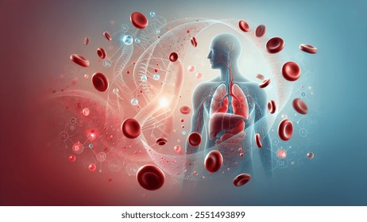

Farmakolojinin Alt Dalları
Veteriner
Farmakologi
Фармакология Илим катары
Фармакология – бул дары-дармектерди, алардын химиялык түзүлүшүн жана тирүү организмге тийгизген таасирин комплекстүү изилдеген илим. Ветеринарияда бул жаныбарлардын биологиялык өзгөчөлүктөрүн эске алуу менен дарылоонун негизин түзөт.
Farmakoloji, ilaç maddelerini ve bunların canlı organizma üzerindeki etkilerini inceleyen bilim dalıdır. Veteriner hekimlikte, hayvan türlerinin biyolojik farklılıklarını gözeterek tedaviyi şekillendirir.
Организмдеги Процесстер
Жаныбарга берилген дары организмге киргенден баштап чыгариланга чейин татаал жолду басып өтөт: ал канга сиңет, ткандарга тарайт, биохимиялык өзгөрүүлөргө учурайт жана денеден тазаланат.
Hayvanlara verilen ilaç, organizmada emilimden atılıma kadar karmaşık süreçlerden geçer: kana karışır, dokulara dağılır, biyokimyasal değişikliklere uğrar ve sonunda vücuttan atılır.

Фармакологиянын Тармактарга Бөлүнүшү
Дарынын таасирин тереңирээк түшүнүү үчүн фармакология бир нече негизги тармактарга бөлүнөт:
1. Farmakodinamik
Дарынын организмге тийгизген биологиялык жана физиологиялык таасирлерин изилдейт.
İlacın organizma üzerindeki biyolojik ve fizyolojik etkilerini inceler.
2. Farmakokinetik
Организмдин дарыга болгон реакциясын (ADME) изилдейт.
Organizmanın ilaca verdiği tepkiyi ve süreçlerini inceler.
3. Farmakoterapi
Ооруларды дарылоодо дарыларды практикалык колдонууну изилдейт.
İlaçların hastalık tedavisinde pratik kullanımını inceler.
4. Toksikoloji
Заттардын организмге тийгизген уулуу таасирлерин изилдейт.
Maddelerin organizma üzerindeki toksik etkilerini inceler.
Farmakoloji; Farmakodinamik, Farmakokinetik, Farmakoterapi ve Toksikoloji gibi alt dallara ayrılır.
Ветеринариядагы Дозанын Маанилүүлүгү
Ар бир жаныбардын түрү дарыга ар башкача реакция берет. Мисалы, бир эле антибиотик итке дары болсо, башка жаныбар үчүн уу болуп калышы мүмкүн. Ошондуктан дозалоо өтө кылдаттыкты талап кылат.
Her hayvan türü ilaçlara farklı tepki verir. Bir antibiyotik türü bir hayvan için şifa ikен diğeri için toksik olabilir. Bu yüzden dozajlama hayati önem taşır.

Farmakodinamika: Таасир Этүү Механизми
Фармакодинамика – дарынын организмге болгон таасирин изилдейт. Ал "Дары организмге эмне кылат?" деген суроого жооп берип, клеткалык деңгээлдеги өзгөрүүлөрдү ачып берет.
Farmakodinamik, ilaçların organizma üzerindeki etkilerini ve etki mekanizmalarını inceler. "İlaç organizmaya ne yapar?" sorusuna yanıt arar.
Рецепторлор жана Байланыштар
Дары молекулалары клеткадагы атайын "рецепторлор" менен ачкыч жана кулпу сыяктуу байланышат. Бул байланыш организмдин физиологиялык функцияларын активдештирет же басаңдатат.
İlaç molekülleri, hücrelerdeki özel "reseptörlerle" anahtar-kilit gibi bağlanır. Bu etkileşim, organizmanın fizyolojik işlevlerini uyarır veya engeller.
Аналгетиктердин Таасири
Мисал катары аналгетиктерди алсак, алар нерв учтарындагы рецепторлорго таасир этип, мээге оору сигналынын жетүүсүн тосуп коюшат.
Örnek olarak analjezikler (ağrı kesiciler), sinir uçlarındaki reseptörlere etki ederek ağrı sinyalinin beyne ulaşmasını engellerler.

Антибиотиктердин Ролу
Антибиотиктер жаныбардын клеткаларына зыян келтирбестен, бактериялардын гана клеткалык капталын же белок синтезин бузуу аркылуу инфекцияны жок кылат.
Antibiyotikler, hayvan hücrelerine zarar vermeden sadece bakterilerin hücre duvarını veya protein sentezini bozarak enfeksiyonu yok eder.
Жүрөк жана Кан Тамыр Препараттары
Бул дарылар жүрөк булчуңунун жыйрылуу күчүн жөнгө салат. Ветеринарияда жүрөк жетишсиздигинде кан тамырларды кеңейтүүчү жана ритмди оңдоочу дарылар кеңири колдонулат.
Bu ilaçlar kalp kasının kasılma gücünü düzenler. Veteriner hekimlikte kalp yetmezliğinde damar genişletici ve ritim düzenleyici ilaçlar yaygın kullanılır.
Терс Таасирлердин Алдын Алуу
Фармакодинамиканы билүү – дарынын пайдасы менен бирге келе турган терс таасирлерин алдын ала билүүгө жана жаныбардын өмүрүн сактап калууга жардам берет.
Farmakodinamiği bilmek, ilacın faydasının yanı sıra oluşabilecek yan etkileri öngörmeye ve hayvanın hayatını kurtarmaya yardımcı olur.
Farmakokinetika: Организмдин Реакциясы
Фармакокинетика – бул организмдин дарыга болгон реакциясы. Ал "Организм дарыга эмне кылат?" деген суроону изилдеп, төрт негизги этаптан (ADME) турат.
Farmakokinetik, organizmanın ilaca verdiği tepkidir. "Organizma ilaca ne yapar?" sorusunu inceler ve dört temel aşamadan (ADME) oluşur.
1. Сиңүү (Absorption)
Дарынын берилүү жолу анын канга сиңүү ылдамдыгын аныктайт. Венага сайылган дары эң тез таасир берет, анткени сиңүү этабын аттап өтөт.
İlacın veriliş yolu (oral, deri altı, damar içi) kana emilim hızını belirler. Damar içi uygulamalar emilim aşamasını atladığı için en hızlı etkiyi gösterir.
2. Таралуу (Distribution)
Канга түшкөн дары молекулалары денедеги суюктуктар жана альбумин белоктору аркылуу керектүү органдарга ташылат. Боор жана бөйрөк сыяктуу органдарга тезирээк жетет.
Kana geçen ilaç molekülleri, vücut sıvıları ve proteinler aracılığıyla organlara taşınır. Karaciğer ve böbrek gibi organlara ilaç daha çabuk ulaşır.
3. Метаболизм (Biotransformasiya)
Дары негизинен боордо химиялык өзгөрүүгө учурайт. Боордогу ферменттер дарыны сууда эрүүчү формага айлантып, организмден чыгарууга даярдайт. Бул этапта дарынын уулуулугу азаят.
İlaç esas olarak karaciğerde kimyasal değişime uğrar. Karaciğer enzimleri ilacı suda çözünür hale getirerek atılıma hazırlar.

4. Чыгарылышы (Excretion)
Дарынын калдыктары организмден бөйрөк, ичеги-карын, өпкө жана бездер (сүт, тер) аркылуу чыгарылат. Сүт аркылуу чыккан дарылар айыл чарбасында өзгөчө мааниге ээ.
İlaç kalıntıları vücuttan böbrekler, dışkı, akciğerler ve bezler (süt, ter) yoluyla atılır. Sütle atılan ilaçlar gıda güvenliği açısından kritik öneme sahiptir.
Түрлөр арасындагы Айырмачылыктар
Мисалы, мышыктардын боорунда кээ бир ферменттер жетишсиз болгондуктан, алар үчүн аспирин өтө уулуу. Ал эми иттерде бул процесс башкача жүрөт. Фармакокинетика ушул айырманы түшүндүрөт.
Örneğin, kedilerin karaciğerinde bazı enzimler eksik olduğu için aspirine karşı çok hassastırlar. Köpeklerde ise bu süreç farklıdır.
Терапиялык Терезе
Ар бир дарынын "терапиялык терезеси" болот. Бул – дарынын таасир бере турган эң төмөнкү жана ууландыра турган эң жогорку деңгээлинин ортосундагы коопсуз зона.
Her ilacın bir "terapötik penceresi" vardır. Bu, ilacın etkili olduğu en düşük seviye ile toksik olduğu en yüksek seviye arasındaki güvenli bölgedir.
Жыйынтык / Sonuç
Ветеринардык фармакология – заманбап медицинанын ажырагыс бөлүгү. Фармакодинамика жана фармакокинетиканы терең билүү жаныбарларды гана дарылабастан, тамак-аш коопсуздугу аркылуу адамдардын да ден соолугун сактоого шарт түзөт.
Veteriner farmakolojisi modern tıbbın ayrılmaz bir parçasıdır. Bu süreçlerin bilinmesi sadece hayvanları iyileştirmekle kalmaz, insan sağlığını да korur.